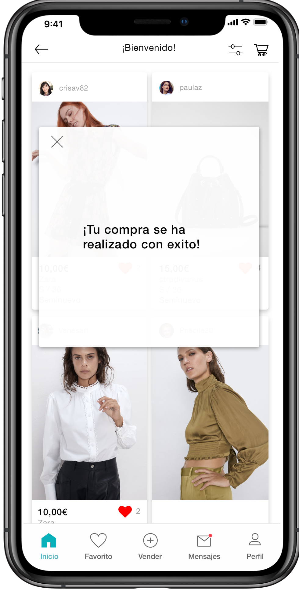
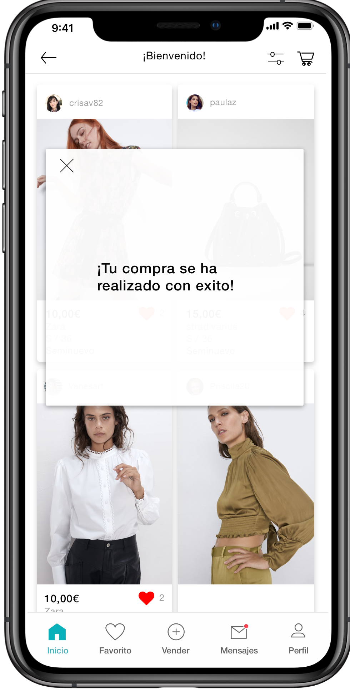

Marina Tomás
UX/UI Designer
LinkedIn - Medium

Una Mentalidad centrada en el usuario, analizar la competencia y hacer un research a fondo.
Este
marco general describe mi proceso de desarrollo de experiencias digitales:
La parte atractiva del diseño:

Hicimos un rediseño de algunas partes de la app de Vinted, tuvimos que hacer un análisis competitivo, hacer un Dafo y que podíamos hacer para que Vinted fuera mejor.


Aquí nos centramos en rediseñar, la interfaz y tratar de que las fotos se vieran bien, implementar un avatar para que los usuarios pudieran ver como les quedaba la ropa. Mejoramos botones como el del corazón para añadir a favoritos e implementamos también una sección de combinados para ver que le venía bien con cada prenda seleccionada.


 


Estoy disponible para proyectos freelance y empleo a tiempo completo.
Marina Tomás UX UI Designer